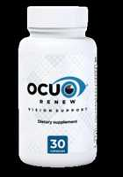

OcuRenew Scam or Legit? The Shocking Truth Exposed (2026 Review)

Click Here to Check Official Batch Availability →| Product Name: | OcuRenew |
| Editorial Score: | 4.8 / 5.0 ⭐⭐⭐⭐⭐ |
| Primary Purpose: | Targeted Bioactive Health & Vitality Formula (Natural Health & Dietary Supplement) |
| Manufacturing / Delivery: | c-GMP Certified, FDA-Registered Facility (USA) |
| Guarantee Shield: | 100% Risk-Free Money-Back Guarantee |
| Official Portal: | Verified Direct Manufacturer Website → |
OcuRenew Reviews
OcuRenew Reviews (Updated) – What is OcuRenew? Is it the best supplement for eye vision support? Does it work? Where to buy it? Read my honest OcuRenew Review!
Product Name OcuRenew
Manufacturing Country USA
Category Eye Vision Support Formula
Supplement Form Capsules
Dosage Take 2 capsules per day
Price $59 / per bottle
Multipack 1 bottle, 3 bottles, 6 bottles
Availability Only through the official website
Money-back guarantee 60 days
OcuRenew is an all-natural and safe to take vision care supplement that includes an efficient blend that offers you positive effects on mitochondrial health. This amazing vision breakthrough helps one regain perfect eyesight within a matter of days.
This supplement is guaranteed to improve not only your vision but every other aspect of your life.
OcuRenew supplement is a proven, science-backed, all-natural sunrise ritual that is designed on rejuvenating your failing eyesight by simply addressing the neurological root of vision loss within days.
How Does OcuRenew Supplement Work?
OcuRenew Supplement works like the one and only all-natural blend that perfectly addresses the neurological root of vision loss. This supplement not only safeguards your mitochondria but also stimulates mitochondrial production naturally.
OcuRenew grants your eyes with high-potency and much-needed cellular energy that allows you to heal your visual system and about recovering your lost vision naturally.
OcuRenew supplement works with the combination of purest, most potent active components in a clinically efficient dose.
This eye vision supplement includes the perfect mixture of 24 carefully selected plant extracts, herbs, and vitamins that are combined in an easy-to-swallow capsule o take once a day.
OcuRenew improves mitochondrial function and restores your vision. And here’re the 4 Steps to Have a Better vision and there are as follows:
- STEP 1: Red Light Activation: Simply observe the beauty of the sunrise and allow the long-wave red light to activate your mitochondria. You can think of it as an exercise for mitochondria, which in turn improves their function and improves their ability to deliver energy to your retina and the rest of your visual system.
- STEP 2: Foundational Support: This step is about activating your mitochondria it is about nourishing them with adequate nutritional cofactors. By taking OcuRenev with a full glass of water, you will hydrate and nourish your eyes with a base of micronutrients designed to ensure that energy production begins on a solid basis.
- STEP 3: Recharge: The combination of highly effective key nutrients that simply recharges and activates your cellular energy production and about boosting antioxidant protection.
- STEP 4: Protection: OcuRenew offers constant protection to your mitochondria and the entire visual system through a unique combination of powerful nutrients, co-factors, and plant compounds that have been proven to improve mitochondrial function and protect against mitochondrial degeneration.
List of Ingredients Inside OcuRenew:
OcuRenew includes an efficient combination of vitamins, minerals, and naturally sourced active components that help in boosting your eye health.
This complete eye nutrition formula works fantastic. And here is the exact list of nutrients included, such as:
- Vitamin A: Vitamin A also plays a key role in keeping you clean of the cornea, the outer covering of your eye. Vitamin A is also a component of rhodopsin, a protein in your eyes that allows you to see in low light conditions, which is crucial for things like night driving.
- Vitamin C: Vitamin C has been shown to slow the progression of Age-Related Macular Degeneration and Cataracts.
- Vitamin B: B vitamins such as B1, B2, B3, B12, and biotin are essential for good vision through their action on the optic nerve and other neurological pathways associated with vision.
- Zinc: Zinc not only helps maintain the health of the retina, cell membranes, and protein structure of the eye but also helps transfer vitamin A to the retina to produce melanin. Minerals such as calcium, magnesium, selenium, copper, and chromium promote healthy cellular function in the eye system.
- Lutein and Zeaxanthin: It is a powerful vision nutrient that protects your eyes by fighting inflammation, defending against free radicals and oxidative stress, and improving the sharpness of your vision.
- Lycopene: Lycopene has the ability to help protect against cataracts and blueberries due to its proven protection against glaucoma and its ability to improve your night vision. Alpha-lipoic acid, Quercetin, and Eyebright for their robust protection against free radical damage and oxidative stress.
- L-Taurine: L-Taurine, an amino acid in the retina of the eye, helps protect against retinal degeneration.
- And Much more!
Recommended Dosage of OcuRenew:
It is recommended to take two capsules of OcuRenew a day and this should be continued for at least 30 days. Long-term use is that the formula contains an extensive list of active components that the body needs to adjust to prevent the accumulation of ROS.
It is not advised to consume more than the recommended dosage as it may cause some side effects. Simply take two OcuRenew capsules with a glass of fresh, clean water and watch the sunrise.
Consuming the eye care supplement for 3 to 6 months helps enhance eyesight and supports overall health. It is suggested not to exceed the recommended dosage without a doctor’s consent.
OcuRenew supplement starts working on a molecular level to provide noticeable results within a few days without any side effects. In case of any allergic reaction to any formula ingredient, it is advised to stop the consumption and immediately visit a doctor.
Benefits of OcuRenew Supplement
OcuRenew Supplement contains active components that show results within a few days. The benefits of the supplement include:
- OcuRenew is an all-natural and safe-to-take formula.
- OcuRenew supplement helps you to have a healthy vision.
- It reduces strain, eye fatigue, and the risk of dryness.
- OcuRenew ingredients are purely sourced from nature’s extract.
- This supplement enhances moisture in your eyes.
- It offers you the absolute key to achieving improvements in declining vision.
- OcuRenew supplement works for anyone at any age.
- This product helps in improving your eye health better.
- This formula prevents age-related eye conditions.
- OcuRenew won’t cause you any side effects.
- This supplement enhances mitochondrial function and restores your eyesight better.
- It doesn’t involve any kind of dangerous surgeries or medications.
- OcuRenew is an effective supplement for enhancing your vision effectively.
- The ingredients create a positive effect on mitochondrial health.
- This supplement helps on restoring your vision naturally.
OcuRenew Drawbacks
- OcuRenew is available online only. There is no offline availability.
- Individual results may vary from person to person—it all depends on your vision condition.
- Consult your vision care professionals if you feel allergen to any ingredients added to this supplement. Do not exceed the recommended dosage.
OcuRenew Customer Reviews:
Analyzing various sources of customer feedback, OcuRenew has received positive reviews from many users.
Finally, Laurene C says…
“No more glasses for me. I went in for my eye exam and my doctor says I no longer need them. He said it was the first time he’d ever seen that happen. He couldn’t believe it.”
Charlie P who writes…
“I love that I can help my grandson with his homework now. Before, my eyes were so bad I just couldn’t read the writing in his textbooks. Now, it’s no problem at all.”
Jane K who says…
“I love starting my day watching the sunrise and taking my OcuRenew. My eyesight is so much better. I went the entire day without putting on my glasses. I just forgot because I didn’t need them!”
How Much Does OcuRenew Cost You?
OcuRenew is a mix of necessary active components to clear your eyesight and shield your eye from future eye problems. When you start using the OcuRenew within a month, you will feel the progress in your vision.
If it is an improvement in your vision and you can see things. This OcuRenew will work in-depth to clear the perception and give you high-potency sight.
- One Bottle of OcuRenew is available for $69 and minor shipping charges.
- Three Bottle of OcuRenew is available for $59 per Bottle were in total $177 and save up to 120$ with free US Shipping.
- Six Bottle of OcuRenew is available for $49 per Bottle which in total $294 and saves up to $300 with free US Shipping.
From the price mentioned above range, you can choose as per your wish and for your requirement and there is no restriction.
Visit the official website, and you can grab the excellent package that you would like most. You will get free shipping in the United States.
OcuRenew Reviews – Final Verdict
In verdict, I would highly recommend you to prefer OcuRenew! This product helps in maintaining a healthy vision without any side effects. This product is about restoring your vision with a combination of highly efficient active components.
OcuRenew supplement has already helped thousands of men and women to make you enjoy perfect vision.
Trust me! There is absolutely nothing to lose or risk here. I’m so confident that you will be utterly thrilled by how this supplement works for you! This product works absolutely in restoring your healthy vision in just days.
This product perfectly supplies your eyes with essential nutrients and vitamins. So, what are you waiting for?
Get your bottle of OcuRenew today! Hurry up! Before the deal ends! Enjoy perfect vision naturally!
FAQs:
Why Choose OcuRenew Supplement?
Using the power of red light by simply watching the sunrise and taking the OcuRenew formula with 24 nutrients for eye treatment, you first activate and support your mitochondria in the morning and give energy to your eyes for the day.
Who This OcuRenew Suitable For?
OcuRenew is formulated to work for both women and men who suffer from loss of visual acuity and are looking for a safe, natural, and efficient way to improve their vision.
It has no side effects and does not interfere with any medications or diet. OcuRenew is created for all ages and medical conditions.
Does OcuRenew Worth Buy?
Absolutely Yes! Do not hesitate and order: your OcuRenew is worth it. Delivery is fast: the purchase will be delivered to your doorstep in five days.
And one more thing: the manufacturer gives you a money-back guarantee, so you won’t lose a penny even if you don’t like the product.
What If OcuRenew Doesn’t Work For Me?
With literally billions of people on the planet, there will be some this doesn’t work for. That’s even the case with most prescription drugs.
So if you do happen to be in the minority on this and it doesn’t work for you, remember, a rock-solid 60-days of Money-Back Guarantee safeguards you.
Where to Buy OcuRenew Eye Drops?
OcuRenew is not available in stores or on Amazon. You must purchase directly from the company via the links on this website to ensure you get the correct item.
Ordering through these links will also give you access to a special non-public price for the OcuRenew monthly stock.
This product offers you a special discount from their manufacturer to offer you special prices for orders of 6 bottles of OcuRenew. This means that when you choose the 6-bottle option, you can get OcuRenew for only $ 49 per bottle plus, FREE shipping.